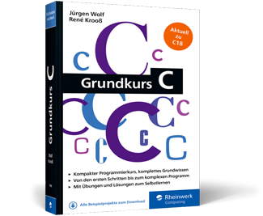
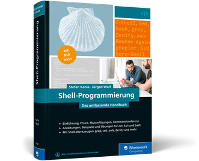

Computergeschichte(n)
Zuse, IBM, Atari, Browserkrieg: Wenn Sie bei diesen Namen in Nostalgie schwelgen oder von der Entdeckerlust gepackt werden, dürfen Sie sich auf dieses Buch freuen. Lassen Sie
sich in dieser Computergeschichte auf eine spannende Reise mitnehmen! Erleben Sie die Entwicklung der Computer, vom gigantischen Rechnerklotz, der einen ganzen Raum ausfüllt, bis zum smarten Hosentaschengerät. Erfahren Sie, wie
der Millennium-Bug die Welt in Hysterie versetzte, und staunen Sie, wie jahrhundertealte Verschlüsselungstechniken noch heute die Programmierwelt beeinflussen.
Capture One 20
Sie wollen Ihren Bildbestand mit Capture One Pro 20 organisieren, entwickeln und präsentieren? Jürgen Wolf zeigt Ihnen Schritt für Schritt, wie Sie Capture One effizient einsetzen
und Ihren fotografischen Praxis-Workflow mit der Software aufbauen. In über 100 Workshops lernen Sie u. a., wie Sie eine Session oder einen Katalog starten, Ihre Bilder sinnvoll archivieren und verwalten, Raw-Bilder bearbeiten
und Ihre Fotografien ansprechend veröffentlichen und drucken. Natürlich wird auch ausführlich auf die Import-Funktion von Lightroom-Katalogen eingegangen!
Grundkurs C
Die kompakte Einführung in die C-Programmierung im praktischen Taschenbuchformat. In diesem Grundkurs finden Sie alles, was Sie zur Programmiersprache C wissen müssen, aktuell
zum Standard C18. Die Autoren erklären die Sprachgrundlagen kurz und übersichtlich, bevor sie zu komplexeren Themen übergehen. Am Ende jedes Kapitels können Sie Ihr Wissen in Übungsaufgaben testen und Ihre Antworten mit den kommentierten
Lösungen vergleichen. Viele Codebeispiele und Tabellen sowie eine Funktionsreferenz machen das Buch zum nützlichen Begleiter für Studium und Ausbildung.
Shellprogrammierung
Die Shell-Programmierung ist das Fundament jedes Linux-Anwenders und System-Administrators. Wer die Kommandozeile sowie die wichtigsten Builtins und Werkzeuge beherrscht, der
verwaltet Linux-Systeme weitaus flexibler. Dieses Handbuch bietet Ihnen alles, was Sie zur Shell-Programmierung benötigen, um eigene Shellscripts zu erstellen. Dank der umfangreichen Linux-UNIX-Referenz ist das Buch auch perfekt
zum Nachschlagen aller grundlegenden Terminal-Kommandos geeignet. Praxisbeispiele sowie Übungen mit Lösungen unterstützen Sie zusätzlich beim Lernen und bei der täglichen Arbeit in der Shell.